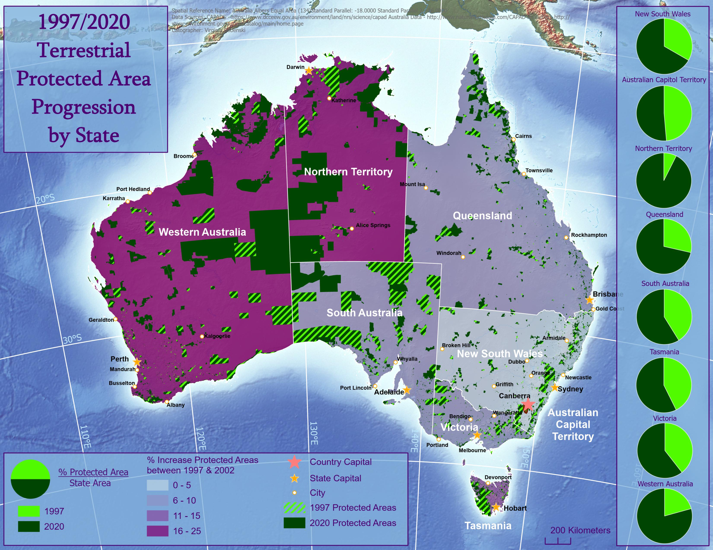
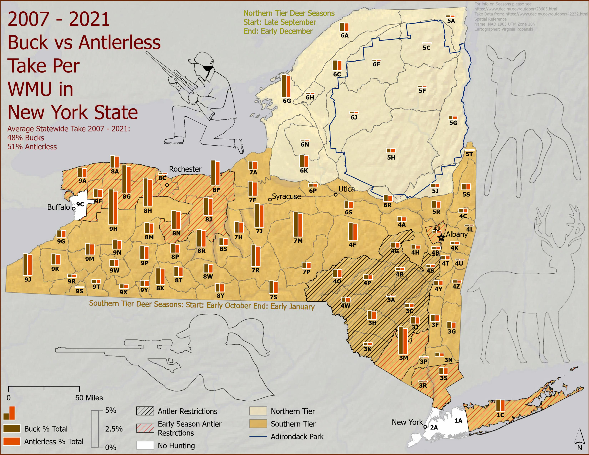
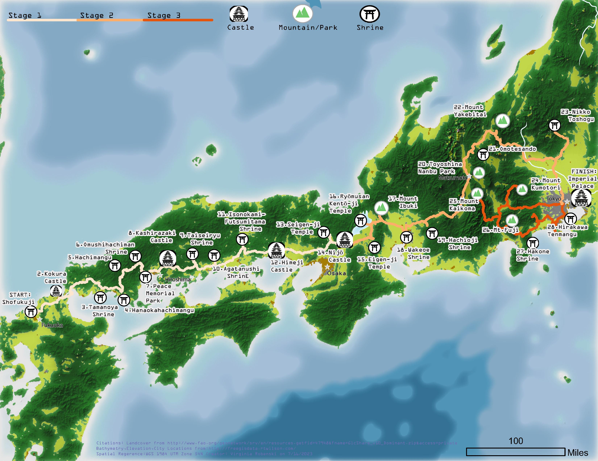
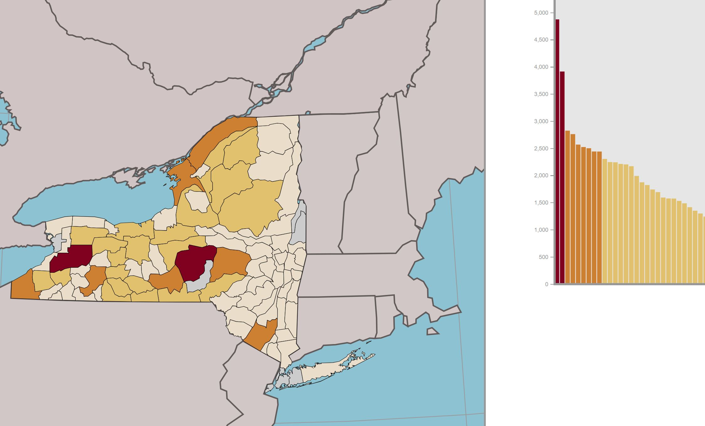
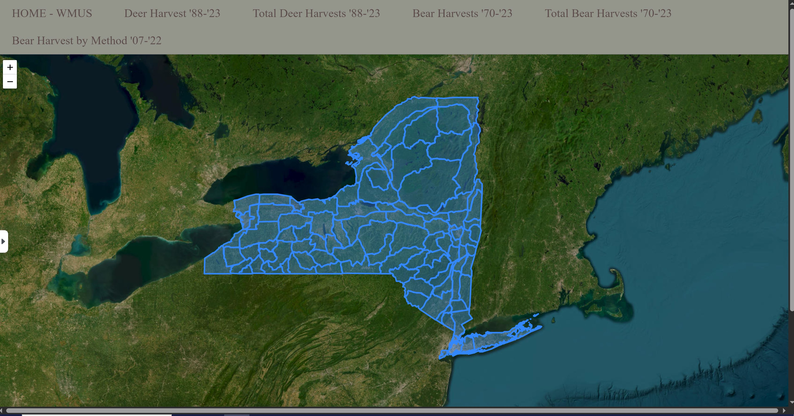
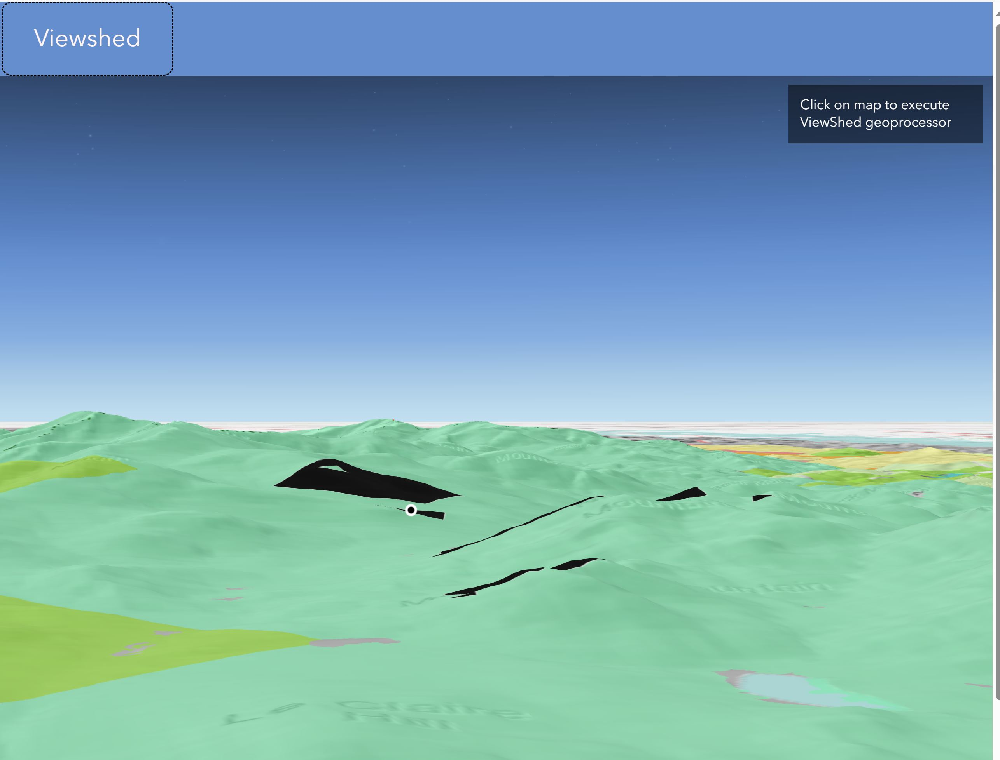

About
Welcome to my Portfolio!
My name is Virginia Robenski, I have been working towards earning my Masters of Science in Cartography and GIS. I recieved my Undergraduate Degree in Wildlife Management from Paul Smiths College. I have a background in GIS Analysis, and Utility Asset Management. Please find my resume here:
Print Cartography
{kind=link}
This is a map created to show a brochure-esque map, utilizing labels, annotations and show different aspects of the state of our choosing.
{kind=link}
This map was created for an assignment challenging you to make a choropleth map. I enjoy showing the relationship of change over time in maps. I chose to show the progression of protected land in Australia between 1997 to 2020.
{kind=link}
This map was a project where I used data from Harvest Reports to show the different between total harvest of antlered vs anterless deer in New York state, between 2007 and 2021. Data for this map was obtained from the NY DEC at "https://dec.ny.gov/things-to-do/hunting/deer-bear
{kind=link}
This map was supposed to represent a promotional add for a bike tour at a location of our choosing. We processed rasters in ArcGIS Pro and utilized photoshop to manipulate the hillshade layers, and stylizing layer. This map represented a new way of making a map, rather than just displaying analysis,it was fun to make.
Web Cartography
This project took data that I worked with in my undergraduate degree, and utilized leaflet to apply a more interative method to view the results of the tracking data. Please find more information by clicking here to view the project.
This project utilized the same data from the harvest report map from my cartographic works, and utilzied D3 to provide a more interactive approach to view the data. I found the first attempt at making a map with this data not as effective as showing the change overtime in harvests. Please click here the view the project.
This project went further into developing the usage of leaflet and d3, along with website design utilzing D3 and html. I used this project as a way to display a large amount of data, in a useful way Please click here to view the project.
This was a project used to explore the usage of the ESRI Javascript API. The goal was to create a useful tool with interesting widgets. The project goal ended up being to create a tool, that allowed users to explore where they can see interesting views (aided with the viewshed analysis) aswell as post and share pictures in the application. The map utilized land classification data and trails as well, to make the information more pertenant when in the area. Please click here to view the project